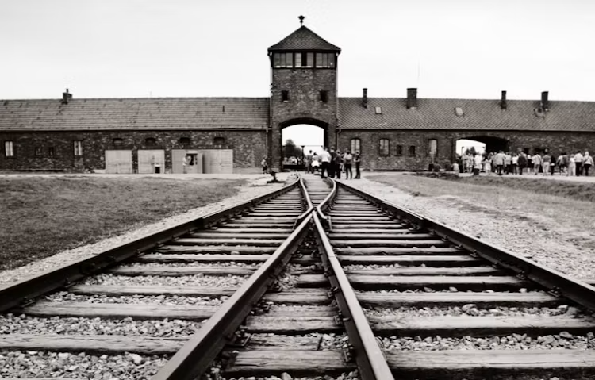
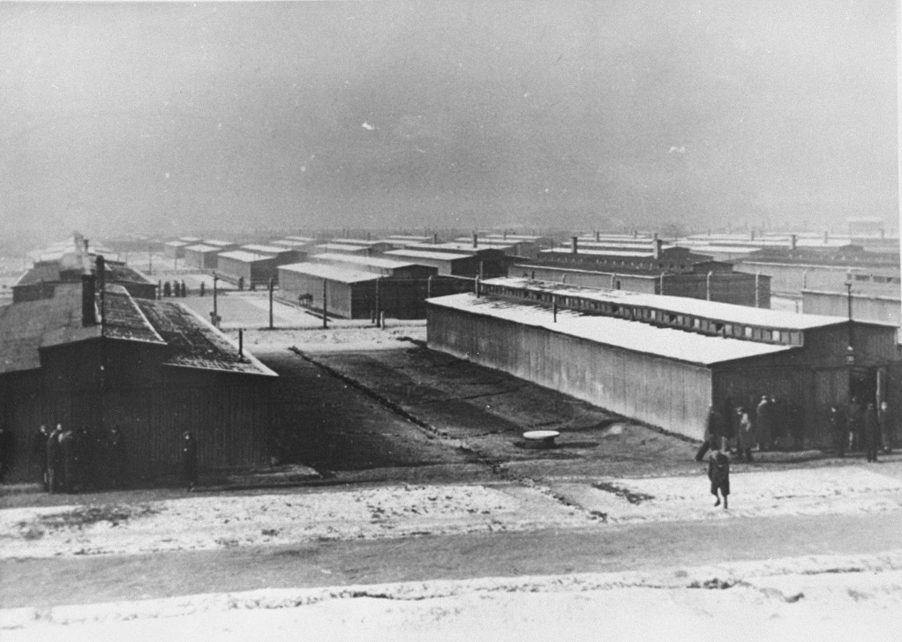

Holokauszt

A holokauszt a második világháború idején, 1933 és 1945 között zajló népirtás volt, amelynek során a náci
Németország és szövetségesei, valamint közreműködő szervezetek üldözték és tömegesen meggyilkolták az
európai zsidóságot. A zsidók mellett más üldözött csoportokat is értek hátrányos megkülönböztetések,
deportálások és gyilkosságok.
A folyamat fokozatosan alakult ki: a zsidó lakosságot először jogi és társadalmi korlátozásokkal
sújtották, majd gettókba kényszerítették, később pedig tömeges deportálásokra került sor. Az áldozatok
jelentős részét koncentrációs- és megsemmisítő táborokba szállították, amelyek közül Auschwitz-Birkenau
vált az egyik legismertebbé.

Magyarországon 1944-ben gyorsult fel a zsidó lakosság deportálása. Több százezer embert szállítottak el,
közülük sokakat Auschwitz-Birkenauba deportáltak. A háború végére az európai zsidóság jelentős része
életét vesztette.
A holokauszt történetének megismerése a 20. század történelmének egyik fontos része. A korszak eseményeit
történelmi források, visszaemlékezések, fényképek és dokumentumok segítségével kutatják.
Egyéb érdekesség